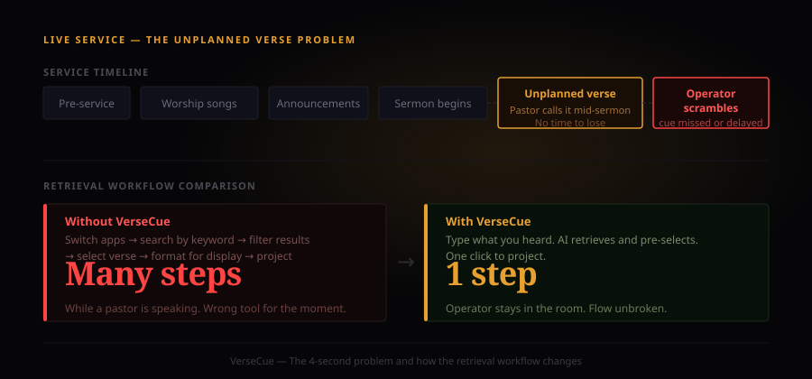

Context
Live worship media is a high-pressure, zero-margin-for-error environment.
Media operators running live church services manage lyrics, scriptures, announcements, and transitions — simultaneously, in real time, in front of a congregation. One wrong slide, one missed cue, and it's visible to everyone in the room. It's a role that demands precision and gets almost no design attention.
VerseCue was built to solve one specific friction point: finding and queuing the right Bible verse mid-service, fast, without losing focus on everything else happening at once.
The Problem
When a pastor calls an unplanned verse, the operator has about four seconds.
Existing tools require operators to know the exact scripture reference, or to search by keyword and then filter through results. That's a workflow designed for preparation — not for live execution under pressure. When a pastor calls a verse mid-sermon, or references it slightly wrong, or uses thematic language instead of a reference, operators scramble. The interface that works in a planning session is the wrong tool in the room.
The cost is small any individual Sunday. Multiplied across every service, it's a consistent source of operational stress for media teams who are already juggling too much.

When a verse is called mid-sermon, the operator needs to retrieve and project it immediately. Existing tools require switching apps and searching manually. VerseCue keeps it in one place, one step.
Approach
Natural language in. Projection-ready verse out. As few steps between them as possible.
VerseCue uses AI to interpret natural language queries — a partial reference, a theme, a sentence lifted from the sermon — and surface the most contextually relevant verses immediately. The operator types what they heard or half-remember, not what they know precisely. The AI handles the disambiguation.
The interface is minimal by design. Operators in a live service don't need features — they need the right result fast and a clear path to push it to screen. The display layer formats verses for immediate projection: correct translation, clean typography, ready to go.

The operator types what they heard from the sermon. The AI interprets the theme, finds the most contextually relevant verses, and the top result is one click from the projection screen.

Projection-ready output: correct translation, clean display typography, formatted for the room.
The Process
Every design decision came back to one constraint: operators can't look away from the main screen.
The dark UI isn't aesthetic — it's functional. Media operators work in partially lit booths at the back or side of a room. A bright white interface creates glare and breaks the operator's visual adjustment to a dim environment. Every colour decision was made against that constraint.
The core design challenge was disambiguation. A query like "the lost sheep" is unambiguous. A query like "come back to the father" could be Luke 15, Romans 8, or a dozen other passages depending on sermon context. The AI layer is prompted to infer semantic intent — theme and context, not just keyword match — and surfaces ranked results rather than a flat list. The operator picks; the AI narrows.
The projection layer is a separate design problem. A verse that reads fine on a laptop at arm's length reads completely differently projected at distance. The display mode uses a larger type scale, increased line spacing, and a high-contrast palette tuned for projection — separate from the operator's query interface, which stays dark and compact.
The stack is React frontend with an AI API for natural language processing and a Bible API for verse data — kept deliberately separate so either can be swapped without breaking the other.
Outcome
A tool that removes the search and keeps the operator in flow.
VerseCue is a fully functional React application. The AI layer handles retrieval — semantic matching against scripture, ranked by contextual relevance — and the operator makes the final call. The core shift isn't speed, it's cognitive load: the operator stays in one tool, in one mental context, instead of switching applications mid-service to chase a reference.
Reflection
The narrow scope is the right call. Tools that try to replace an operator's full workflow fail; tools that solve one specific job within that workflow get used. If I were developing this further, I'd add service planning mode — the ability to pre-queue verses before the service starts, with the AI layer available for the inevitable improvisation. That would make VerseCue useful for both preparation and live execution without compromising either.